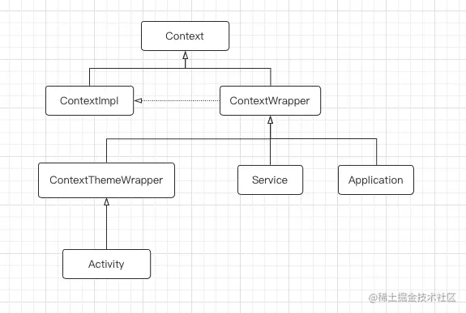

Context是什么
context贯穿在我开发过程的方方面面，但我始终不知道这个context到底有什么用？为什么要这个对象？我们首先来看官方对于Context类的注释
vbnet代码解读复制代码/**
* Interface to global information about an application environment. This is
* an abstract class whose implementation is provided by
* the Android system. It
* allows access to application-specific resources and classes, as well as
* up-calls for application-level operations such as launching activities,
* broadcasting and receiving intents, etc.
*/
public abstract class Context {
}
Context最重要的作用就是获取全局消息、访问系统资源、调用应用程序级的操作。
Context如何生成
在程序启动的过程中，AMS会把一个“凭证”通过跨进程通信给到我们的应用程序，我们的程序会把这个“凭证”封装成context，并提供一系列的接口，这样我们的程序也就可以很方便地访问系统资源了。
这样做的好处：系统可以对应用程序级的操作进行调控，限制各种情景下的权限，同时也可以防止恶意攻击
Context是应用程序与系统之间沟通的桥梁，是应用程序访问系统资源的接口，同时也是系统给应用程序的一张“权限凭证”。有了context，一个Java类才可以被称之为组件
Context的继承关系

最顶层是Context抽象类，他定义了一系列与系统交汇的接口。ContextWrapper继承自Context，但是并没有真正实现Context中的接口，而是把接口的实现都托管给ContextImpl，ContextImpl是Context接口的真正实现者，从AMS拿来的“凭证”也是封装到了ContextImpl中，然后赋值给ContextWrapper，这里运用到了一种模式：装饰者模式。Application和Service都继承自ContextWrapper，那么他们也就拥有Context的接口方法且本身即是context，方便开发者的使用。Activity比较特殊，因为它是有界面的，所以他需要一个主题：Theme，ContextThemeWrapper在ContextWrapper的基础上增加与主题相关的操作
这样设计的优点：
- Activity等可以更加方便地使用context，可以把自身当成context来使用，遇到需要context的接口直接把自身传进去即可。
- 运用装饰者模式，向外屏蔽ContextImpl的内部逻辑，同时当需要更改ContextImpl的逻辑实现，ContextWrapper的逻辑几乎不需要更改。
- 更方便地扩展不同情景下的逻辑。如service和activity，情景不同，需要的接口方法也不同，但是与系统交互的接口是相同的，使用装饰者模式可以拓展出很多的功能，同时只需要把ContextImpl对象赋值进去即可。
源码阅读
Application中Context的创建过程
进入ActivityThread类的performLaunchActivity方法
private Activity performLaunchActivity(ActivityClientRecord r, Intent customIntent) {
ActivityInfo aInfo = r.activityInfo;
if (r.packageInfo == null) {
r.packageInfo = getPackageInfo(aInfo.applicationInfo, r.compatInfo,
Context.CONTEXT_INCLUDE_CODE);
}
ComponentName component = r.intent.getComponent();
if (component == null) {
component = r.intent.resolveActivity(
mInitialApplication.getPackageManager());
r.intent.setComponent(component);
}
if (r.activityInfo.targetActivity != null) {
component = new ComponentName(r.activityInfo.packageName,
r.activityInfo.targetActivity);
}
ContextImpl appContext = createBaseContextForActivity(r);
Activity activity = null;
try {
java.lang.ClassLoader cl = appContext.getClassLoader();
activity = mInstrumentation.newActivity(
cl, component.getClassName(), r.intent);
StrictMode.incrementExpectedActivityCount(activity.getClass());
r.intent.setExtrasClassLoader(cl);
r.intent.prepareToEnterProcess(isProtectedComponent(r.activityInfo),
appContext.getAttributionSource());
if (r.state != null) {
r.state.setClassLoader(cl);
}
} catch (Exception e) {
if (!mInstrumentation.onException(activity, e)) {
throw new RuntimeException(
"Unable to instantiate activity " + component
+ ": " + e.toString(), e);
}
}
try {
//创建Application
Application app = r.packageInfo.makeApplication(false, mInstrumentation);
if (localLOGV) Slog.v(TAG, "Performing launch of " + r);
if (localLOGV) Slog.v(
TAG, r + ": app=" + app
+ ", appName=" + app.getPackageName()
+ ", pkg=" + r.packageInfo.getPackageName()
+ ", comp=" + r.intent.getComponent().toShortString()
+ ", dir=" + r.packageInfo.getAppDir());
if (activity != null) {
CharSequence title = r.activityInfo.loadLabel(appContext.getPackageManager());
Configuration config =
new Configuration(mConfigurationController.getCompatConfiguration());
if (r.overrideConfig != null) {
config.updateFrom(r.overrideConfig);
}
if (DEBUG_CONFIGURATION) Slog.v(TAG, "Launching activity "
+ r.activityInfo.name + " with config " + config);
Window window = null;
if (r.mPendingRemoveWindow != null && r.mPreserveWindow) {
window = r.mPendingRemoveWindow;
r.mPendingRemoveWindow = null;
r.mPendingRemoveWindowManager = null;
}
// application context.
appContext.getResources().addLoaders(
app.getResources().getLoaders().toArray(new ResourcesLoader[0]));
appContext.setOuterContext(activity);
activity.attach(appContext, this, getInstrumentation(), r.token,
r.ident, app, r.intent, r.activityInfo, title, r.parent,
r.embeddedID, r.lastNonConfigurationInstances, config,
r.referrer, r.voiceInteractor, window, r.configCallback,
r.assistToken, r.shareableActivityToken);
if (customIntent != null) {
activity.mIntent = customIntent;
}
r.lastNonConfigurationInstances = null;
checkAndBlockForNetworkAccess();
activity.mStartedActivity = false;
int theme = r.activityInfo.getThemeResource();
if (theme != 0) {
activity.setTheme(theme);
}
if (r.mActivityOptions != null) {
activity.mPendingOptions = r.mActivityOptions;
r.mActivityOptions = null;
}
activity.mLaunchedFromBubble = r.mLaunchedFromBubble;
activity.mCalled = false;
if (r.isPersistable()) {
mInstrumentation.callActivityOnCreate(activity, r.state, r.persistentState);
} else {
mInstrumentation.callActivityOnCreate(activity, r.state);
}
if (!activity.mCalled) {
throw new SuperNotCalledException(
"Activity " + r.intent.getComponent().toShortString() +
" did not call through to super.onCreate()");
}
r.activity = activity;
mLastReportedWindowingMode.put(activity.getActivityToken(),
config.windowConfiguration.getWindowingMode());
}
r.setState(ON_CREATE);
synchronized (mResourcesManager) {
mActivities.put(r.token, r);
}
} catch (SuperNotCalledException e) {
throw e;
} catch (Exception e) {
if (!mInstrumentation.onException(activity, e)) {
throw new RuntimeException(
"Unable to start activity " + component
+ ": " + e.toString(), e);
}
}
return activity;
}
进入 r.packageInfo.makeApplication的内部
public Application makeApplication(boolean forceDefaultAppClass,
Instrumentation instrumentation) {
//如果存在则直接返回
if (mApplication != null) {
return mApplication;
}
Trace.traceBegin(Trace.TRACE_TAG_ACTIVITY_MANAGER, "makeApplication");
Application app = null;
String appClass = mApplicationInfo.className;
if (forceDefaultAppClass || (appClass == null)) {
appClass = "android.app.Application";
}
try {
final java.lang.ClassLoader cl = getClassLoader();
if (!mPackageName.equals("android")) {
Trace.traceBegin(Trace.TRACE_TAG_ACTIVITY_MANAGER,
"initializeJavaContextClassLoader");
initializeJavaContextClassLoader();
Trace.traceEnd(Trace.TRACE_TAG_ACTIVITY_MANAGER);
}
// Rewrite the R 'constants' for all library apks.
SparseArray<String> packageIdentifiers = getAssets().getAssignedPackageIdentifiers(
false, false);
for (int i = 0, n = packageIdentifiers.size(); i < n; i++) {
final int id = packageIdentifiers.keyAt(i);
if (id == 0x01 || id == 0x7f) {
continue;
}
rewriteRValues(cl, packageIdentifiers.valueAt(i), id);
}
//创建一个ContextImpl类型的变量
ContextImpl appContext = ContextImpl.createAppContext(mActivityThread, this);
// The network security config needs to be aware of multiple
// applications in the same process to handle discrepancies
NetworkSecurityConfigProvider.handleNewApplication(appContext);
//创建一个app实例
app = mActivityThread.mInstrumentation.newApplication(
cl, appClass, appContext);
//将app赋值给appContext的mOuterContext
appContext.setOuterContext(app);
} catch (Exception e) {
if (!mActivityThread.mInstrumentation.onException(app, e)) {
Trace.traceEnd(Trace.TRACE_TAG_ACTIVITY_MANAGER);
throw new RuntimeException(
"Unable to instantiate application " + appClass
+ " package " + mPackageName + ": " + e.toString(), e);
}
}
mActivityThread.mAllApplications.add(app);
//将app赋值给mApplication
mApplication = app;
if (instrumentation != null) {
try {
//最终调用application的onCreate
instrumentation.callApplicationOnCreate(app);
} catch (Exception e) {
if (!instrumentation.onException(app, e)) {
Trace.traceEnd(Trace.TRACE_TAG_ACTIVITY_MANAGER);
throw new RuntimeException(
"Unable to create application " + app.getClass().getName()
+ ": " + e.toString(), e);
}
}
}
Trace.traceEnd(Trace.TRACE_TAG_ACTIVITY_MANAGER);
return app;
}
进入Instrumentation类的callApplicationOnCreate方法
public void callApplicationOnCreate(Application app) {
app.onCreate();
}
进入newApplication方法
public Application newApplication(ClassLoader cl, String className, Context context)
throws InstantiationException, IllegalAccessException,
ClassNotFoundException {
Application app = getFactory(context.getPackageName())
.instantiateApplication(cl, className);
app.attach(context);
return app;
}
进入instantiateApplication方法
public @NonNull Application instantiateApplication(@NonNull ClassLoader cl,
@NonNull String className)
throws InstantiationException, IllegalAccessException, ClassNotFoundException {
return (Application) cl.loadClass(className).newInstance();
}
通过ClassLoader创建application实例。
进入Application类的attach方法中
java代码解读复制代码@UnsupportedAppUsage
/* package */ final void attach(Context context) {
attachBaseContext(context);
mLoadedApk = ContextImpl.getImpl(context).mPackageInfo;
}
进入attachBaseContext方法中
csharp代码解读复制代码protected void attachBaseContext(Context base) {
if (mBase != null) {
throw new IllegalStateException("Base context already set");
}
mBase = base;
}
这里的context是在makeApplication方法中通过ContextImpl.createAppContext创建的，所以是一个ContextImpl类型的Context。到此application获取context的过程大致走了一遍
Activity中Context的创建过程
进入ActivityThread类中的performLaunchActivity方法
scss代码解读复制代码private Activity performLaunchActivity(ActivityClientRecord r, Intent customIntent) {
ActivityInfo aInfo = r.activityInfo;
if (r.packageInfo == null) {
r.packageInfo = getPackageInfo(aInfo.applicationInfo, r.compatInfo,
Context.CONTEXT_INCLUDE_CODE);
}
ComponentName component = r.intent.getComponent();
if (component == null) {
component = r.intent.resolveActivity(
mInitialApplication.getPackageManager());
r.intent.setComponent(component);
}
if (r.activityInfo.targetActivity != null) {
component = new ComponentName(r.activityInfo.packageName,
r.activityInfo.targetActivity);
}
//创建一个ContextImpl对象
ContextImpl appContext = createBaseContextForActivity(r);
Activity activity = null;
try {
java.lang.ClassLoader cl = appContext.getClassLoader();
//创建activity对象
activity = mInstrumentation.newActivity(
cl, component.getClassName(), r.intent);
StrictMode.incrementExpectedActivityCount(activity.getClass());
r.intent.setExtrasClassLoader(cl);
r.intent.prepareToEnterProcess(isProtectedComponent(r.activityInfo),
appContext.getAttributionSource());
if (r.state != null) {
r.state.setClassLoader(cl);
}
} catch (Exception e) {
if (!mInstrumentation.onException(activity, e)) {
throw new RuntimeException(
"Unable to instantiate activity " + component
+ ": " + e.toString(), e);
}
}
try {
Application app = r.packageInfo.makeApplication(false, mInstrumentation);
if (localLOGV) Slog.v(TAG, "Performing launch of " + r);
if (localLOGV) Slog.v(
TAG, r + ": app=" + app
+ ", appName=" + app.getPackageName()
+ ", pkg=" + r.packageInfo.getPackageName()
+ ", comp=" + r.intent.getComponent().toShortString()
+ ", dir=" + r.packageInfo.getAppDir());
if (activity != null) {
CharSequence title = r.activityInfo.loadLabel(appContext.getPackageManager());
Configuration config =
new Configuration(mConfigurationController.getCompatConfiguration());
if (r.overrideConfig != null) {
config.updateFrom(r.overrideConfig);
}
if (DEBUG_CONFIGURATION) Slog.v(TAG, "Launching activity "
+ r.activityInfo.name + " with config " + config);
Window window = null;
if (r.mPendingRemoveWindow != null && r.mPreserveWindow) {
window = r.mPendingRemoveWindow;
r.mPendingRemoveWindow = null;
r.mPendingRemoveWindowManager = null;
}
// Activity resources must be initialized with the same loaders as the
// application context.
appContext.getResources().addLoaders(
app.getResources().getLoaders().toArray(new ResourcesLoader[0]));
//将activity赋值给appContext的mOuterContext，这样我们可以通过ContextImpl来调用activity中的方法和变量
appContext.setOuterContext(activity);
//appContext传入activity中
activity.attach(appContext, this, getInstrumentation(), r.token,
r.ident, app, r.intent, r.activityInfo, title, r.parent,
r.embeddedID, r.lastNonConfigurationInstances, config,
r.referrer, r.voiceInteractor, window, r.configCallback,
r.assistToken, r.shareableActivityToken);
if (customIntent != null) {
activity.mIntent = customIntent;
}
r.lastNonConfigurationInstances = null;
checkAndBlockForNetworkAccess();
activity.mStartedActivity = false;
int theme = r.activityInfo.getThemeResource();
if (theme != 0) {
activity.setTheme(theme);
}
if (r.mActivityOptions != null) {
activity.mPendingOptions = r.mActivityOptions;
r.mActivityOptions = null;
}
activity.mLaunchedFromBubble = r.mLaunchedFromBubble;
activity.mCalled = false;
if (r.isPersistable()) {
mInstrumentation.callActivityOnCreate(activity, r.state, r.persistentState);
} else {
mInstrumentation.callActivityOnCreate(activity, r.state);
}
if (!activity.mCalled) {
throw new SuperNotCalledException(
"Activity " + r.intent.getComponent().toShortString() +
" did not call through to super.onCreate()");
}
r.activity = activity;
mLastReportedWindowingMode.put(activity.getActivityToken(),
config.windowConfiguration.getWindowingMode());
}
r.setState(ON_CREATE);
// updatePendingActivityConfiguration() reads from mActivities to update
// ActivityClientRecord which runs in a different thread. Protect modifications to
// mActivities to avoid race.
synchronized (mResourcesManager) {
mActivities.put(r.token, r);
}
} catch (SuperNotCalledException e) {
throw e;
} catch (Exception e) {
if (!mInstrumentation.onException(activity, e)) {
throw new RuntimeException(
"Unable to start activity " + component
+ ": " + e.toString(), e);
}
}
return activity;
}
进入activity类中的attach方法
final void attach(Context context, ActivityThread aThread,
Instrumentation instr, IBinder token, int ident,
Application application, Intent intent, ActivityInfo info,
CharSequence title, Activity parent, String id,
NonConfigurationInstances lastNonConfigurationInstances,
Configuration config, String referrer, IVoiceInteractor voiceInteractor,
Window window, ActivityConfigCallback activityConfigCallback, IBinder assistToken,
IBinder shareableActivityToken) {
attachBaseContext(context);
mFragments.attachHost(null /*parent*/);
//mWindow的初始化
mWindow = new PhoneWindow(this, window, activityConfigCallback);
mWindow.setWindowControllerCallback(mWindowControllerCallback);
//设置mWindow的回调。
mWindow.setCallback(this);
mWindow.setOnWindowDismissedCallback(this);
mWindow.getLayoutInflater().setPrivateFactory(this);
if (info.softInputMode != WindowManager.LayoutParams.SOFT_INPUT_STATE_UNSPECIFIED) {
mWindow.setSoftInputMode(info.softInputMode);
}
if (info.uiOptions != 0) {
mWindow.setUiOptions(info.uiOptions);
}
mUiThread = Thread.currentThread();
mMainThread = aThread;
mInstrumentation = instr;
mToken = token;
mAssistToken = assistToken;
mShareableActivityToken = shareableActivityToken;
mIdent = ident;
mApplication = application;
mIntent = intent;
mReferrer = referrer;
mComponent = intent.getComponent();
mActivityInfo = info;
mTitle = title;
mParent = parent;
mEmbeddedID = id;
mLastNonConfigurationInstances = lastNonConfigurationInstances;
if (voiceInteractor != null) {
if (lastNonConfigurationInstances != null) {
mVoiceInteractor = lastNonConfigurationInstances.voiceInteractor;
} else {
mVoiceInteractor = new VoiceInteractor(voiceInteractor, this, this,
Looper.myLooper());
}
}
//给mWindow设置WindowManager
mWindow.setWindowManager(
(WindowManager)context.getSystemService(Context.WINDOW_SERVICE),
mToken, mComponent.flattenToString(),
(info.flags & ActivityInfo.FLAG_HARDWARE_ACCELERATED) != 0);
if (mParent != null) {
mWindow.setContainer(mParent.getWindow());
}
//Window中刚才设置的WindowManager获取出来赋值给Activity中的成员变量`mWindowManager`
mWindowManager = mWindow.getWindowManager();
mCurrentConfig = config;
mWindow.setColorMode(info.colorMode);
mWindow.setPreferMinimalPostProcessing(
(info.flags & ActivityInfo.FLAG_PREFER_MINIMAL_POST_PROCESSING) != 0);
setAutofillOptions(application.getAutofillOptions());
setContentCaptureOptions(application.getContentCaptureOptions());
}
进入attachBaseContext方法
@Override
protected void attachBaseContext(Context newBase) {
super.attachBaseContext(newBase);
if (newBase != null) {
newBase.setAutofillClient(this);
newBase.setContentCaptureOptions(getContentCaptureOptions());
}
}
进入ContextThemeWrapper类中的attachBaseContext
@Override
protected void attachBaseContext(Context newBase) {
super.attachBaseContext(newBase);
}
进入ContextWrapper类中的attachBaseContext方法
protected void attachBaseContext(Context base) {
if (mBase != null) {
throw new IllegalStateException("Base context already set");
}
mBase = base;
}
activity.attachBaseContext,内部代码如下, 而super.attachBaseContext(newBase) 会根据继承关系一直调用到ContextWrapper, 然后将ContextImpl类型的Context传进去，赋值给mBase。
到此Activity中Context创建过程到此结束
Service中context的创建过程
进入Activity类中的handleCreateService方法中
private void handleCreateService(CreateServiceData data) {
unscheduleGcIdler();
LoadedApk packageInfo = getPackageInfoNoCheck(
data.info.applicationInfo, data.compatInfo);
Service service = null;
try {
if (localLOGV) Slog.v(TAG, "Creating service " + data.info.name);
Application app = packageInfo.makeApplication(false, mInstrumentation);
final java.lang.ClassLoader cl;
if (data.info.splitName != null) {
cl = packageInfo.getSplitClassLoader(data.info.splitName);
} else {
cl = packageInfo.getClassLoader();
}
//创建service对象
service = packageInfo.getAppFactory()
.instantiateService(cl, data.info.name, data.intent);
//创建ContextImpl对象
ContextImpl context = ContextImpl.getImpl(service
.createServiceBaseContext(this, packageInfo));
if (data.info.splitName != null) {
context = (ContextImpl) context.createContextForSplit(data.info.splitName);
}
if (data.info.attributionTags != null && data.info.attributionTags.length > 0) {
final String attributionTag = data.info.attributionTags[0];
context = (ContextImpl) context.createAttributionContext(attributionTag);
}
context.getResources().addLoaders(
app.getResources().getLoaders().toArray(new ResourcesLoader[0]));
//将service赋值给ContextImpl类中的mOuterContext变量
context.setOuterContext(service);
//将创建的context传入service中
service.attach(context, this, data.info.name, data.token, app,
ActivityManager.getService());
// 调用service的onCreate方法
service.onCreate();
mServicesData.put(data.token, data);
mServices.put(data.token, service);
try {
ActivityManager.getService().serviceDoneExecuting(
data.token, SERVICE_DONE_EXECUTING_ANON, 0, 0);
} catch (RemoteException e) {
throw e.rethrowFromSystemServer();
}
} catch (Exception e) {
if (!mInstrumentation.onException(service, e)) {
throw new RuntimeException(
"Unable to create service " + data.info.name
+ ": " + e.toString(), e);
}
}
}
进入service类中的attach方法
public final void attach(
Context context,
ActivityThread thread, String className, IBinder token,
Application application, Object activityManager) {
attachBaseContext(context);
mThread = thread; // NOTE: unused - remove?
mClassName = className;
mToken = token;
mApplication = application;
mActivityManager = (IActivityManager)activityManager;
mStartCompatibility = getApplicationInfo().targetSdkVersion
< Build.VERSION_CODES.ECLAIR;
setContentCaptureOptions(application.getContentCaptureOptions());
}
进入attachBaseContext方法
@Override
protected void attachBaseContext(Context newBase) {
super.attachBaseContext(newBase);
if (newBase != null) {
newBase.setContentCaptureOptions(getContentCaptureOptions());
}
}
Service类型的ContextImpl赋值给了ContextWrapper中的mBase变量，这样我们调用ContextWrapper中的方法实际就是调用mBase这个真正的ContextImpl中的方法。
到此service创建context已经分析完成。
其他
getApplication()和getApplicationContext()的区别？
getApplication方法仅仅限于Activity和Service中有，其它的类没有，那么如果其它的类想要获取Application的实例的话，就可以通过context.getApplicationContext来获取了，也就是说这个方法的使用范围更加大，便于使用而已。
不同Context的区别
1. Application Context
- 获取方式：通过
getApplicationContext()。 - 生命周期：与整个应用程序的生命周期一致，只要应用在运行，
Application Context就存在。 - 作用范围：
- 用于需要全局使用的场景，比如单例模式或跨组件通信。
- 创建与应用生命周期一致的资源，如长时间运行的服务或缓存。
- 特点：
- 独立于UI：与界面无关，不能直接操作UI（例如，弹出
Dialog或更新Activity的视图）。 - 内存管理更安全：因为它的生命周期与应用一致，不会因
Activity的销毁而泄露内存。
- 独立于UI：与界面无关，不能直接操作UI（例如，弹出
- 典型场景：
- 初始化全局状态或配置。
- 获取系统服务（如
ConnectivityManager或LocationManager）。 - 使用
SharedPreferences或文件系统。
2. Activity Context
- 获取方式：直接在
Activity中使用this，或者通过Activity的引用。 - 生命周期：与
Activity的生命周期一致，当Activity销毁时，Activity Context也会被回收。 - 作用范围：用于与当前
Activity相关的操作，如加载布局、启动其他Activity、更新UI。 - 特点：
- 与UI强关联：可以操作界面元素，例如显示
Toast或创建Dialog。 - 容易引起内存泄漏：如果在长生命周期对象（如
Singleton或静态变量）中持有Activity Context，会阻止Activity被垃圾回收，导致内存泄漏。
- 与UI强关联：可以操作界面元素，例如显示
3. Service Context
- 获取方式：在
Service中直接使用this，或通过Context传递。 - 生命周期：与服务的生命周期一致。
- 特点：
- 类似于
Application Context，但通常用于服务的特定操作。 - 无法操作UI，因为服务通常运行在后台线程中。
- 类似于